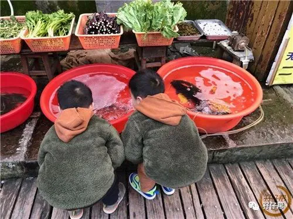
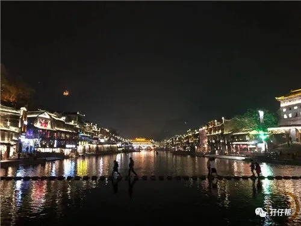

背景: 圆圈3岁6个月5天
地点：湖南·湘西凤凰古城
人物：双胞胎兄弟圆圆&圈圈，圆圈爸和圆圈妈，圆圈爷爷&奶奶，圆圈表姐
文|圆圈妈，一个文思如尿崩的双胎妈妈
图|圆圈妈，菜鸟摄影师
· 正 · 文 · 来 · 啦 ·
天门山森林公园结束后，我们启程回去，绕道去了趟凤凰古城。
这是我和圆圈爸第二次去凤凰古城，当时的圆圈爸只是一枚正在修炼中的“男朋友”。
8年前的夏天，我和圆圈爸刚认识不久，正好是深圳大运会，全城放假三天。
我们策划了一场说走就走的旅行，那也是我第一次出省，而且还是跟着一枚刚认识不久的小鲜肉。
还好这颗嫩草最终被我这个“老姑婆”收入囊中，成了双胞胎圆圈兄弟的爸爸！
此次旧地重游，两人行变成七人行，阵仗不容小觑啊！
#吃#
古城内的消费普遍较高，一碗青菜面12元，同样分量的面，古城外的一碗木耳面才6元。
我们从天门山开车到凤凰古城，历经3个半小时，下榻到酒店已经是下午两点钟了。
在古城外一个路边摊吃了顿简陋的午餐，88元，5个菜，四大三小，味道一般，主要是管饱！
☞☞TIPS☜☜:
推荐一个很便宜的吃饭地方。
穿过凤凰文化广场，往西门方向走出古城100米远就是当地人的菜市场，在那附近吃饭，没人以为你是游客，都是实价！
#住#
现在的凤凰古城已经很商业化了，古城内外到处都是民宿客栈，软硬件设施非常便利！
只要兜里有人民币，住哪都可以！
古城内的临江客栈，价格较高，普遍在200元以上，注意，这还是淡季的价格。
我们优先考虑临江客栈，找了一圈都没有找到低于200元的双人房。
其实住处有很多选择，任君挑选，但停车位稀缺。
若是自驾游，车该停哪里是个大问题，大多数民宿客栈都不提供停车位，景区内有其他场地提供停车服务，一晚上50元。
我们最后订了古城外的酒店，靠近凤凰文化广场，走几步就可以进入古城内，主要是该酒店免费提供停车位，才104元一晚，超划算。
☞☞TIPS☜☜:
文艺小资的情侣，可以住在古城内的临江客栈，浪漫有情调。
拖家带口的家庭住酒店比较合适，人员没那么复杂，相对安全点。
#门票#
凤凰古城大门票在2016年就取消了，我看到网上有凤凰古城九景的联票125元，还以为是必买的门票。
幸亏得有良心的客服告知，即使不买联票也可以自由出入古城内游玩。
125元的联票其实也挺划算的，包含了日游沱江泛舟，但因为大部分景点都去过且没啥看头，就没有买这个联票。
此次旧地重游，除了是纪念下我和圆圈爸的第一次私奔游，也是为了带圆圈兄弟体验下湘西人民的慢生活和欣赏下烟雨笼罩下的凤凰古城。
#景点#
凤凰古城有9大景点，均是网红最爱的打卡胜地：沈从文故居，熊希龄故居，杨家祠堂，崇德堂，古城博物馆，虹桥，东门城楼，沱江泛舟，万寿宫。
①沱江跳岩
正对着北门城楼的跳岩，是由两排独立的方块石墩形成了一条独特通道连接两岸。
经过此江时要一步一“跳”，脚下就是清澈的沱江，有些刺激。
这里是凤凰最具人气的拍摄点之一，站在跳岩上，背后是广阔的沱江，有一种忘乎所以的冲动！
这个对于三岁半的圆圈哥俩来说，非常对口。
他们最喜欢挑战这种高风险的游玩项目了，远远看见就一直嚷嚷着要过桥，完全不考虑我老母亲此刻胆战心惊的心情。
这水看着不是很深，水流也不湍急，但依然担心他们随时会踩空掉下去。
无奈，抵不过他们那股跃跃欲试的劲头。
我牵着圆圆，圆圈爸牵着圈圈，小心翼翼地走着，原本走得好好的，走到一半，我可能是太紧张了，不小心分心，没有与圆圆保持一致的步伐，导致他的左脚踩空掉水里了，还好及时拉住他才不至于整个人掉入水里。
②沱江泛舟
沱江是凤凰古城的母亲河，清澈的河水下还有水草摇摆，可以乘船欣赏沱江。
沱江泛舟有两段，上游为正规游船，在北门城楼北侧的码头上船东行至万寿宫下船，中途在江中欣赏沱江风光；费用80元。
下游乘船点在观光桥码头，为农家私船，费用40元。2011年坐过一次私家船，15块钱人，20分钟左右，现在居然要40元，感觉划不来。
圆圈一直嚷嚷着要坐船，我们觉得不是很安全就拒绝了，现在想想有点遗憾，毕竟好不容易来一趟，无非就是让他们体验下各种新事物。
☞☞TIPS☜☜:
正规游船和私家船都配有游泳圈，这个安全问题还是放心的。
但是坐私家船要注意咯。
听旁人投诉说拉客的人态度极好，百依百顺，可是划船的人却恶语相向，偷工减料，承诺来回40分钟，实际顶多30分钟。
③沈从文故居+熊希龄故居
听导游在给游客讲解时很骄傲地说小小的凤凰古城，出了两位名人，可谓人杰地灵啊！
这确实不假！
但现在的凤凰古城被严重商业化，这两位名人的故居早已显得格格不入了。
8年前进去看过一次，印象中也没有什么看点，可能是因为我不是文学爱好者的缘故吧，哈哈。
其实所谓的故居，实际都是为了美观，翻修或者人工装饰而成，大老远跑来看这些人造的人文景观，不觉得好浪费表情吗？
带着孩子去逛这些古迹，似乎有点鸡同鸭讲，倒不如去古色古香的小巷街边走走。
踩一踩城内的青石板街道、欣赏沱江边的吊脚楼，感受下浓厚的苗族风情。
圆圈兄弟看到街道两边的那些新玩意儿，激动极了。
看到店门口的老板在做姜糖，一脸好奇地看着，看到一老奶奶用筛子做手工粉，一个劲地发东问西，看到一大叔在做木锤酥，驻足观望了许久，不愿离去….
只要不赶时间不赶路，我和圆圈爸都愿意陪着他们看个够。
④虹桥
虹桥上两边都是商店，往南边走下来后，一整条街都是饭店餐馆。
虽然人流大，但是门店的生意都不咋滴，可能是淡季吧！很多店门口张灯结彩，敲锣打鼓都不见一个游客在用餐。
虹桥适合“可远观而不可亵玩焉”。
远处看才觉得特别有味道，尤其是华灯初上，静静看着桥墩在水中的倒影，从哪个方向拍照都有不同韵味，但是走在上面，淹没在熙熙攘攘的人群中，顿时好感全无！
⑤吊脚楼
吊脚楼，是凤凰古城中富有浓郁苗族建筑特色的古建筑之一，但我们现在看到的都不是原汁原味的吊脚楼。
凤凰古城被发展旅游后，吊脚楼里的当地人看到商机，纷纷将自家的吊脚楼重新装修，以吸引更多游客。
即便是重建的，也非常有特色，至少我很买账！
我很好奇这些扎进水里的不规则木棍是装饰用还是真的能承重，让人很担心万一塌下来了怎么办？
⑥万名塔
凤凰古城的大多数景点都不适合近看，不然有点“见光死”的感觉，比如这个万名塔。
屹立沱江北岸，为大级六角砖塔，这塔近看不咋滴，里面都是小孩子的屎尿屁，非常不雅观。
但是从沱江对面看，就觉得特别高大上，塔影倒映江心，水中岸上两个塔，非常壮观，超适合拍照。
⑦凤凰文化广场
凤凰广场上有一只铜质的凤凰，欲展翅飞翔，是凤凰古镇的标志性建筑，很有代表性。
这个广场不大，但却是旅游团的第一站，很多游客都被安排在这个铜凤凰下拍照留念。
我们去的那天晚上正好有免费演出，可惜是当地的方言，我听不懂。
就好像外地人初到广东，听不懂白话一样，只能从他们的指手画脚中猜出几分意思。
⑧古城夜景
凤凰古城是国家历史文化名城，曾被新西兰著名作家路易艾黎称赞为中国最美丽的小城，这里与云南丽江古城、山西平遥古城媲美，享有“北平遥，南凤凰”之名。
夜幕下的凤凰古城，灯火通明，非常惊艳，确实名不虚传！
可能是地理位置和光线问题，凤凰古城其实是个拍照胜地。
无论是晴天阴天，还是白天黑夜，不带滤镜美颜，不管哪个角度拍，随便一张照片都可以美美哒。
#其他注意事项#
看到“公厕”两个字，记得问下是否收费，通常是1元或者2元一人。
其实古城内也有免费厕所，但相当隐秘，因为装修得非常文艺，不注意看，真不好找，还以为是卖工艺品的小店。
古城内消费一定要货比三家，虹桥内的麻酥糖100元10包，虹桥外就是50元10包，你怎么看！
外地车进入凤凰县，就有人在你等红绿灯的间隙，敲打你的车窗，问你要不要住宿，要不要吃饭。甚至有人会站在马路中央，热心地告诉你前方此路不通或告知没有停车位。
你装B就行了，不用理会！跟着导航走，哪怕最后真的走到断头路，大不了掉头就是了，总好过被他们牵着鼻子走。
虽然民宿很多，不愁住，但很容易挑花眼，让你很心烦，建议去之前一定要选好住处，尤其是带着孩子出行，准备充分绝对不会错！
进入古城，你会很受欢迎，会有很多人找你搭讪，问你要不要买花环拍艺术照，邀你去苗寨玩，去篝火晚会，问你要不要坐船等。
有需要就应一下，不需要就摇头，一笑而过，而我则继续装B，不回应！因为只要你回应了，哪怕是明确回复“不需要”，那人也会一直缠着你不放。
有些人毫无节操，看你带着孩子，就会使劲在你面前把玩手上的玩具，一个劲地鼓吹孩子催大人买。
我对这样的兜售方式相当反感，沈从文先生笔下那些淳朴的民风民情，早就随着古城过度商业化而变味了。
因此，建议你对待这种变相兜售方式，选择暂时性失聪失明吧。
古城内随处可见老奶奶在摆摊绣花编织，卖一些手工制品，这要是以前我一定同情心泛滥，即便不喜欢也会光顾下，但见多了各种套路，就不想买了。
凤凰古城的那些小玩意儿，表面上看着精致，基本上都是义乌小商品货， 买之前擦亮眼睛哈！除非，你真的很喜欢！
天后宫这个地方，有点坑，门口写着大大的“免费入内”四字，实际里面另有乾坤。
走到尽头，会有和尚向你讨要香火钱，而且10元起步，如果你脸皮厚坚决不给，那你可以进去看看！会不会被和尚们五花大绑住，不让出去！
冬季的凤凰古城，雾气很重，我们在古城的第二天居然下起了毛毛细雨，街道上到处都是湿漉漉的，记得随身携带雨具哦！
但不得不否认，雨雾天的古城，更添神韵。
-END-
重磅互动
#你希望写什么育儿经验干货？#
评论区聊一聊
随便提，万一下篇就写了呢？
关于这个号
谢谢关注！
我是圆圈妈
85后，全职妈妈
家有孖仔两枚，圆圈&圈圈
双胞胎育儿公众号：孖仔帮
ID:twinsbang
旨意分享双胞胎育儿经验帮助双胞胎家庭
有经验可循
有组织可靠
希望我的经验对您有所启发
期待与您一起共享双胞胎育儿经



